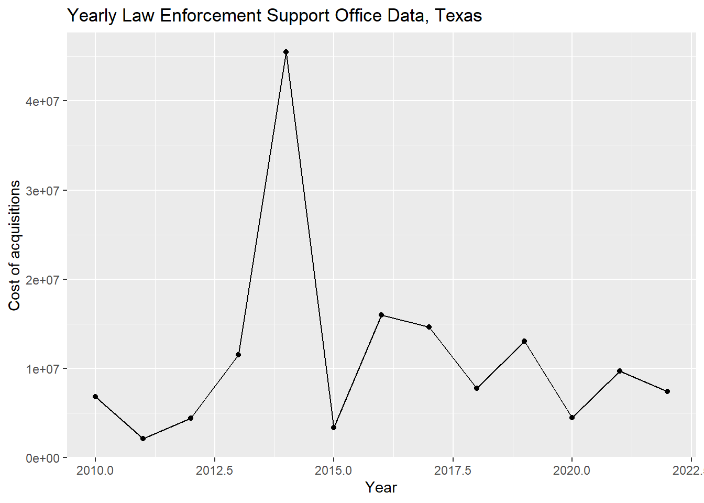
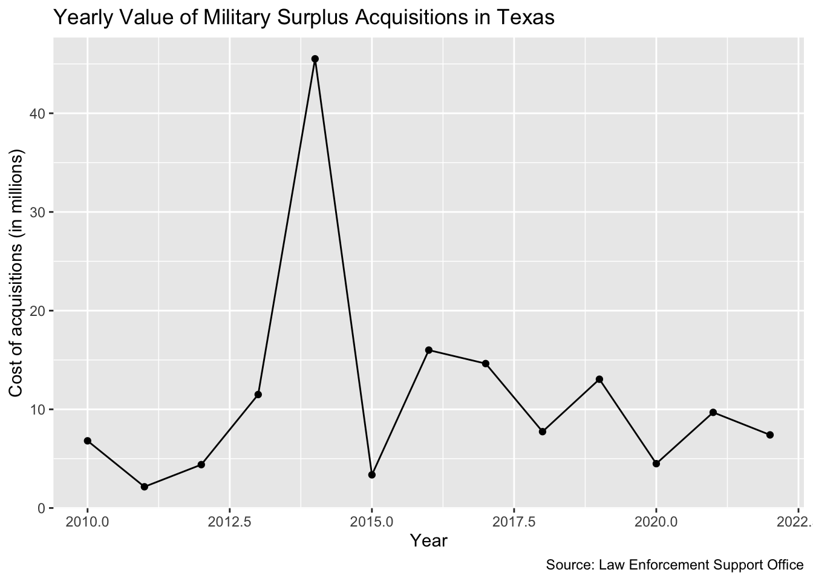

Chapter 8 Deeper into ggplot
The chapter is by Prof. Lukito, who uses a PC.
In the last chapter, you were introduced to ggplot2, the tidyverse package that helps you build graphics, charts, and figures. In this chapter, we’ll take your ggplot knowledge to the next level. We encourage you to treat this chapter as a reference.
8.1 References
ggplot2 has a LOT to it and we’ll cover only the basics. Here are some references you might use:
- ggplot cheatsheet
- R for Data Science
- R Graphics Cookbook
- The R Graph Gallery another place to see examples.
- ggplot2: Elegant graphics for Data Analysis
8.2 Learning goals for this chapter
In this chapter, we will cover the following topics:
- How to prepare and build a line chart
- How to use themes to change the looks of a chart
- More about aesthetics in layers!
- Faceting, or making multiple charts from the same data
- How to save files
- How to make interactive plots with
Plotly
8.3 Set up your notebook
This week, we’ll return to our leso data, but start a new RNotebook. Let’s open our “yourname-military-surplus” R project first, and then create a new RNotebook. Do this:
- Create your RNotebook.
- Rename the title “Military Surplus figures”
- Remove the rest of the boilerplate template.
- Save the file and name it
03-ggplot.Rmd. - Load the
tidyverselibrary.
We’ll also load the lubridate package, which we used previously.
8.3.1 Let’s get the data
We’ll demonstrate this in class, but you can also follow along in the screencast.
Next, let’s read in the leso.csv dataset, which we imported in 5.4.4. We’ll do this using read_csv().
You should be able to do this on your own. Really!
leso <- read_csv("data-raw/leso.csv") #read the data in## Rows: 117518 Columns: 12
## ── Column specification ────────────────────────────────────────────────────────
## Delimiter: ","
## chr (7): state, agency_name, nsn, item_name, ui, demil_code, station_type
## dbl (4): sheet, quantity, acquisition_value, demil_ic
## dttm (1): ship_date
##
## ℹ Use `spec()` to retrieve the full column specification for this data.
## ℹ Specify the column types or set `show_col_types = FALSE` to quiet this message.glimpse(leso) #peek at the data## Rows: 117,518
## Columns: 12
## $ sheet <dbl> 1, 1, 1, 1, 1, 1, 1, 1, 1, 1, 1, 1, 1, 1, 1, 1, 1, 1…
## $ state <chr> "AL", "AL", "AL", "AL", "AL", "AL", "AL", "AL", "AL"…
## $ agency_name <chr> "ABBEVILLE POLICE DEPT", "ABBEVILLE POLICE DEPT", "A…
## $ nsn <chr> "2540-01-565-4700", "6760-01-628-6105", "5855-01-577…
## $ item_name <chr> "BALLISTIC BLANKET KIT", "CAMERA ROBOT", "ILLUMINATO…
## $ quantity <dbl> 10, 1, 10, 1, 1, 1, 9, 1, 10, 1, 1, 12, 11, 1, 1, 10…
## $ ui <chr> "Kit", "Each", "Each", "Each", "Each", "Each", "Each…
## $ acquisition_value <dbl> 15871.59, 1500.00, 1128.00, 10000.00, 245.88, 658000…
## $ demil_code <chr> "D", "D", "D", "Q", "D", "C", "D", "C", "D", "C", "D…
## $ demil_ic <dbl> 1, 7, 1, 3, NA, 1, 1, 1, 1, 1, 1, 1, 1, 1, 1, 1, 1, …
## $ ship_date <dttm> 2018-01-30, 2017-02-08, 2017-03-28, 2017-03-28, 201…
## $ station_type <chr> "State", "State", "State", "State", "State", "State"…
Don’t forget to also do the other processing steps we did in Chapter 5.
Buuuut, if you needed a refresher, check out section 5.4.6 to 5.4.7. There are 2 steps to this:
- Removing unnecessary columns using
select()
- Creating a
total_valuecolumn usingmutate()
Again, you should be able to do this on your own
leso_tight <- leso |>
select(
-sheet,
-nsn,
-starts_with("demil")
) #this chunk removes unnecessary columns
leso_total <- leso_tight |>
mutate(total_value = quantity * acquisition_value) #this chunk creates a total_value columnAlrighty! Let’s look at the data
leso_total |> glimpse()## Rows: 117,518
## Columns: 9
## $ state <chr> "AL", "AL", "AL", "AL", "AL", "AL", "AL", "AL", "AL"…
## $ agency_name <chr> "ABBEVILLE POLICE DEPT", "ABBEVILLE POLICE DEPT", "A…
## $ item_name <chr> "BALLISTIC BLANKET KIT", "CAMERA ROBOT", "ILLUMINATO…
## $ quantity <dbl> 10, 1, 10, 1, 1, 1, 9, 1, 10, 1, 1, 12, 11, 1, 1, 10…
## $ ui <chr> "Kit", "Each", "Each", "Each", "Each", "Each", "Each…
## $ acquisition_value <dbl> 15871.59, 1500.00, 1128.00, 10000.00, 245.88, 658000…
## $ ship_date <dttm> 2018-01-30, 2017-02-08, 2017-03-28, 2017-03-28, 201…
## $ station_type <chr> "State", "State", "State", "State", "State", "State"…
## $ total_value <dbl> 158715.90, 1500.00, 11280.00, 10000.00, 245.88, 6580…Lookin’ good!
8.4 Wrangle the data
To prepare the data for visualizing, we need to do a couple more new things. This is going to take several steps, which we will pipe together.
filterthe data to focus on more recent data. Let’s specifically consider military surplus in 2010 and after.- And then, create a
yearvariable using theyear()function.year()is a function inlubridatethat allows us to aggregate
- And then,
selecta few variables to study (specifically,year,total_value, andstate) - You should save all that into a new data frame called
leso_dated.
leso_dated <- leso_total |>
filter(ship_date >= as.Date("2010-01-01")) |>
mutate(year = year(ship_date)) |> #if you get an error, make sure you've loaded the lubridate library!
select(year, total_value, state)
glimpse(leso_dated)## Rows: 79,736
## Columns: 3
## $ year <dbl> 2018, 2017, 2017, 2017, 2016, 2016, 2016, 2016, 2016, 2016…
## $ total_value <dbl> 158715.90, 1500.00, 11280.00, 10000.00, 245.88, 658000.00,…
## $ state <chr> "AL", "AL", "AL", "AL", "AL", "AL", "AL", "AL", "AL", "AL"…There’s a lot of information in this data, so let’s focus our visualizing on Texas, like we did in our previous chapters. We’ll do this by filtering the rows where state == "TX".
leso_texas <- leso_dated |>
filter(state == "TX")Now that we have our data in a nice structure, with some yearly information, let’s use our GSA process (group_by() |> summarize() |> arrange()). In this process, we’ll group by year (the variable we have just created), summarize a the total value of the military surplus (by year) and arrange that information chronologically.
leso_texas_gsa <- leso_texas |>
group_by(year) |>
summarize(yearly_cost = sum(total_value)) |>
arrange(year)
head(leso_texas_gsa) #use head() to view the first 6 rows of this new data frame## # A tibble: 6 × 2
## year yearly_cost
## <dbl> <dbl>
## 1 2010 6808748.
## 2 2011 2151465.
## 3 2012 4395836.
## 4 2013 11497911.
## 5 2014 45516881.
## 6 2015 3361841.We may come back to the data to fix some stuff but for now, we’re ready to plot!
If any of these steps are confusing to you, we encourage you to go back to Chapter 5 and 6.
8.5 Make a line chart of the Texas data
Data visualization is an iterative process: you may prepare the data, do the visualization, and then realize you want to prepare the data a different way. Remember that the process of coding can involve trial and error: you’re often testing different thing to see what works.
8.5.1 Plot the chart
Alright, so now let’s get ready to use the ggplot() function. I want you to create the plot here one step at a time so you can review how the layers are added.
In this new plot, we’ll learn about a new geom layer: geom_line() (recall that in Chapter 7, we learned about geom_point() and geom_col()).
- Add and run the ggplot() line first (but without the
+) - Then add the
+and thegeom_point()and run it. - Then add the
+andgeom_line()and run it. - Then add the
+andlabs(), and run everything.
ggplot(leso_texas_gsa, aes(x = year, y = yearly_cost)) + #we create the graph
geom_point() + #adding the points
geom_line() + #adding the lines between the points
labs(title = "Yearly Law Enforcement Support Office Data, Texas",
x = "Year", y = "Cost of acquisitions")
8.5.2 Cleaning Up
Alright, so we have a working plot! But there’s a couple things that are a bit ugly about this plot. First, I’m not digging the weird numbers on the side (what the heck does 0.0e+00 even mean?!). To fix this, let’s go back to our data and do a bit more preparing. If we use head() to look at our data, we’ll notice that there are a few numbers that are just really, really big.
head(leso_texas_gsa) #use head() to view the first 6 rows of this new data frame## # A tibble: 6 × 2
## year yearly_cost
## <dbl> <dbl>
## 1 2010 6808748.
## 2 2011 2151465.
## 3 2012 4395836.
## 4 2013 11497911.
## 5 2014 45516881.
## 6 2015 3361841.These large numbers are causing R to read our numbers as “scientific notation” (a math-y way of reading large numbers). For example, the total cost of supplies in February 2010 was 5,399,589.0 (that’s the first spike in our figure, around the 5.0e + 06 mark). But what a pain to read!
To get around this, let’s divide our yearly_cost variable (in the leso_tx_gsa data frame) by 1 million. Just like we round our numbers when we write about data, so too do we often round numbers when we visualize it. In the line below, we use mutate() to divide yearly_cost by 1,000,000.
leso_texas_gsa <- leso_texas_gsa |>
mutate(yearly_cost = yearly_cost/1000000) #divide by 1 million
head(leso_texas_gsa)## # A tibble: 6 × 2
## year yearly_cost
## <dbl> <dbl>
## 1 2010 6.81
## 2 2011 2.15
## 3 2012 4.40
## 4 2013 11.5
## 5 2014 45.5
## 6 2015 3.36Now, let’s re-visualize our data. Notice that in the labs layer below, we add some new information to the y-axis, so people know that the 5 here refers to 5 million.
ggplot(leso_texas_gsa, aes(x = year, y = yearly_cost)) + #we create the graph
geom_point() + #adding the points
geom_line() + #adding the lines between the points
labs(title = "Yearly Value of Military Surplus Acquisitions in Texas",
x = "Year", y = "Cost of acquisitions (in millions)",
caption = "Source: Law Enforcement Support Office")
Our chart is looking much better!
8.5.3 Saving plots as an object
Sometimes it is helpful to push the results of a plot into an R object to “save” those configurations. You can continue to add layers to this object, but you won’t need to rebuild the main portions of the chart each time. We’ll do that here so we can explore themes next.
- Edit your Texas plot chunk you made earlier to save it into an R object, and then call
tx_plotafter it so you can see it.
# the line below saves the graph results into tx_plot
tx_plot <- ggplot(leso_texas_gsa, aes(x = year, y = yearly_cost)) +
geom_point() +
geom_line() +
labs(title = "Yearly Value of Military Surplus Acquisitions in Texas",
x = "Year", y = "Cost of acquisitions (in millions)",
caption = "Source: Law Enforcement Support Office")
# Since we saved the plot into an R object above, we have to call it again to see it.
# We save graphs like this so we can reuse them.
tx_plot
We can continue to build upon the tx_plot object like we do below with themes, but those changes won’t be “saved” into the R environment unless you assign it to an R object.
8.6 Themes
The look of the graph is controlled by the theme. There are a number of preset themes you can use. Let’s look at a couple.
- Create a new section saying we’ll explore themes.
- Add the chunk below and run it.
tx_plot +
theme_minimal()
This takes our existing tx_plot and then applies the theme_minimal() look to it.
There are a number of themes built into ggplot, most are pretty simplistic.
- Edit your existing chunk to try different themes. Some you might try are
theme_classic(),theme_dark()andtheme_void().
8.6.1 More with ggthemes
There are a number of other packages that build upon ggplot2, including ggthemes.
- In your R console, install the
ggthemespackage using theinstall.packages()function:install.packages("ggthemes") - Add the
library(ggthemes)at the top of your current chunk. - Update the theme line to view some of the others options noted below.
library(ggthemes)
tx_plot +
theme_economist()
tx_plot +
theme_fivethirtyeight()
tx_plot +
theme_stata()
8.6.2 There is more to themes
There is also a theme() function that allows you individually adjust about every visual element on your plot.
We do a wee bit of that later.
8.7 Adding more information
OK, our Texas military surplus information is fine … but how does that compare to neighboring states? Let’s work through building a new chart that shows all those steps.
8.7.1 Prepare the data
We need to go back to our original leso_dated to get the additional states.
- Start a new section that notes we are building a chart for five states (Texas, Oklahoma, Arkansas, New Mexico, and Louisiana)
- Prepare the data using the
%in%filter that we learned about in Chapter 6. Rather than creating a separate list, we’re going to write the list right into thefilter()function usingc().
leso_five <- leso_dated |>
filter(
state %in% c("TX", "OK", "AR", "NM", "LA")
)
leso_five## # A tibble: 10,690 × 3
## year total_value state
## <dbl> <dbl> <chr>
## 1 2021 880 AR
## 2 2021 168 AR
## 3 2018 1918 AR
## 4 2015 3861 AR
## 5 2021 4977. AR
## 6 2021 421. AR
## 7 2022 13300. AR
## 8 2022 5828 AR
## 9 2021 44478 AR
## 10 2021 232. AR
## # … with 10,680 more rowsNow that we have our five states, let’s GSA this information, like we did earlier (but for all 5 states and not just Texas).
Again, this should be a refresher!
leso_five_gsa <- leso_five |>
group_by(state, year) |> #groups by state AND year
summarize(yearly_cost = sum(total_value)) |>
mutate(yearly_cost = yearly_cost/1000000) #divide by 1 million## `summarise()` has grouped output by 'state'. You can override using the
## `.groups` argument.leso_five_gsa |> glimpse()## Rows: 58
## Columns: 3
## Groups: state [5]
## $ state <chr> "AR", "AR", "AR", "AR", "AR", "AR", "AR", "AR", "AR", "AR"…
## $ year <dbl> 2010, 2011, 2012, 2013, 2014, 2015, 2016, 2017, 2018, 2019…
## $ yearly_cost <dbl> 0.00135600, 0.69895063, 0.62593678, 2.72113085, 12.0759872…8.7.2 Plot multiple line chart
For our next plot, we’ll add a different line for each state. To do this you would use the color aesthetic aes() in the geom_line() geom. Recall that geoms can have their own aes() variable information. This is especially useful for working with a third variable (like when making a stacked bar chart or line plot with multiple lines). Notice that the color aesthetic (meaning that it is in aes) takes a variable, not a color. You can learn how to change these colors here. For now, though, we’ll use the ggplot default colors.
- Add a note that we’ll now build the chart.
- Add the code chunk below and run it. Look through the comments so you understand it.
ggplot(leso_five_gsa, aes(x = year, y = yearly_cost)) +
geom_point() +
geom_line(aes(color = state)) + # The aes selects a color for each state
labs(title = "Yearly Value of Military Surplus Acquisitions in Texas and Boardering States",
x = "Yearly", y = "Cost of acquisitions (in millions)",
caption = "Source: Law Enforcement Support Office")
Notice that R changes the color of the line, but not the point? This is because we only included the aesthetic in the geom_line() geom and not the geom_point() geom.
- Edit your
geom_point()to addaes(color = state).
ggplot(leso_five_gsa, aes(x = year, y = yearly_cost)) +
geom_point(aes(color = state)) +
geom_line(aes(color = state)) + # The aes selects a color for each state
labs(title = "Yearly Value of Military Surplus Acquisitions in Texas and Boardering States",
x = "Year", y = "Cost of acquisitions (in millions)",
caption = "Source: Law Enforcement Support Office")
8.8 On your own: Line chart
I want you to make a line chart of military surplus acquisitions in three states that are different from the five we used above. This is very similar to the chart you just made, but with different values.
Some things to do/consider:
- Do this in a new section and explain it.
- You’ll need to prepare the data just like we did above to get the right data points and the right states.
- I really suggest you build both chunks (the data prep and the chart) one line at a time so you can see what each step adds.
8.9 Tour of some other adjustments
You don’t have to add these examples below to your own notebook, but here are some examples of other things you can control.
8.9.1 Line width
ggplot(leso_five_gsa, aes(x = year, y = yearly_cost)) +
geom_point(aes(color = state)) +
geom_line(aes(color = state), size = 1.5) + #make the lines thicker here
labs(title = "Yearly Value of Military Surplus Acquisitions in Texas and Boardering States",
x = "Year", y = "Cost of acquisitions (in millions)",
caption = "Source: Law Enforcement Support Office")## Warning: Using `size` aesthetic for lines was deprecated in ggplot2 3.4.0.
## ℹ Please use `linewidth` instead.
8.9.2 Line type
This example removes the points and adds a linetype = state to the ggplot aesthetic. This gives each state a different type of line. We also set the color in the geom_line()
ggplot(leso_five_gsa, aes(x = year, y = yearly_cost)) +
geom_point(aes(color = state)) +
geom_line(aes(color = state, linetype = state), size = 0.75) + #changes the line type
labs(title = "Yearly Value of Military Surplus Acquisitions in Texas and Boardering States",
x = "Year", y = "Cost of acquisitions (in millions)",
caption = "Source: Law Enforcement Support Office")
Notice that when you put the information geom_line(aes()) (like with color and linetype), this varies the color and linetype of the lines, whereas size is consistent for all the lines.
8.9.3 Adjust axis
ggplot() typically makes assumptions about scale. Sometimes, you may want to change it though (e.g., make them a little larger). There are a couple different ways to do this. The most straightforward may be xlim() and ylim().
ggplot(leso_five_gsa, aes(x = year, y = yearly_cost)) +
geom_point(aes(color = state)) +
geom_line(aes(color = state, linetype = state), size = 0.75) + #changes the line type
xlim(2009, 2022) + # sets minimum and maximum values on axis
labs(title = "Yearly Value of Military Surplus Acquisitions in Texas and Boardering States",
x = "Year", y = "Cost of acquisitions (in millions)",
caption = "Source: Law Enforcement Support Office") The function
The function xlim() and ylim() are shortcuts for scale_x_continuous() and scale_y_continuous() which do more things.
8.10 Facets
Facets are a way to make multiple graphs based on a variable in the data. There are two types, the facet_wrap() and the facet_grid(). There is a good explanation of these in R for Data Science.
We’ll start by creating a base graph and then apply the facet.
- Start a new section about facets
- Add the code below to create your chart and view it. This is the same plot we’ve already created
five_plot <- ggplot(leso_five_gsa, aes(x = year,
y = yearly_cost)) +
geom_point(aes(color = state)) +
geom_line(aes(color = state)) +
labs(title = "Yearly Value of Military Surplus Acquisitions in Texas and Boardering States",
x = "Year", y = "Cost of acquisitions (in millions)",
caption = "Source: Law Enforcement Support Office")
five_plot
8.10.1 Facet wrap
The facet_wrap() function splits your chart based on a single variable. To use the facet_wrap() function, you need one argument: a ~ followed by a space and the variable you want to split by (in the chart below, this will be the state variable).
Like with our themed plots, we’ll use a + to add this facet_wrap() layer to our previously created line graph.
- Add a new chunk and include our previously created plot
- Use the
+in the next line to “pipe” in afacet_wrap()layer. - (We also use a
themelayer to remove the legend. See what happens when you comment this out!)
five_plot +
facet_wrap(~ state) +
theme(legend.position = "none") # this line removes the legend. Try it without it!
A couple of notes about the above code:
- Note the comment in the code above where we used the
theme()function to remove the legend. - You can specify the number of rows or columns of the grouping by adjusting the facet_wrap() function:
facet_wrap(~ state, nrow = 2)orfacet_wrap(~ state, ncol = 2). Try them!
8.10.2 Facet grids
A facet_grid() allows you to plot on a combination of variables. We don’t really have two numbers to compare in our higher education data so we’ll show this with the mpg data we’ve used before.
- Start a new section noting you’ll try facet grid.
- Add the chunk below and run it. Notice here that we are putting our
aes()layer ingeom_point().
Explanations follow the chart.
ggplot(mpg) +
geom_point(aes(x = displ, y = hwy)) + # add points to the chart
facet_grid(drv ~ cyl) # splits into charts by drive train and cylinder
This chart is kinda hard to read, but let’s try:
- Inside the mini charts, the best gas mileage is toward the top (from
hwy) and the smaller engines are to the left (fromdispl.) - The rows of charts are divided by drive train
drv: four-wheel drive, front-wheel drive and rear-wheel drive. - The columns of charts are divided by cylinders: like a 4-cylinder car vs 8-cylinder car.
This chart tells us that 4-cylinder, front-wheel drive cars with smaller engines get the best gas mileage. The blank charts mean that combination of values didn’t exist in the data.
8.11 On your own: Facet wrap
- Create a section about doing a facet wrap on your own.
- Take the “On your own” plot that you made earlier (The other states that you chose) and apply a
facet_wrap()here. You were instructed to save the plot into an R object, so you should be able to use that. - Remove the legend since each mini chart is labeled.
8.12 Saving plots
To save plots as images, you can right-click plots that you make in RNotebooks. Or, you can use the export button in the Plot pane. Or (and this is a preferred strategy), you can save them using ggsave(). (Learn more here).
- Use your Files pane to create a new folder called “images” so we can save our chart there.
- Start a section on saving plots and add the following chunk.
ggsave("images/txplot.png", plot = tx_plot)## Saving 7 x 5 in imageUsing ggsave creates a higher-res image than other methods. It needs:
- The path and name of the image, in quotes
- the
plot =variable to say which plot you are saving. (Your plot must already be saved into an R object for this method to work.)
8.13 Interactive plots
Want to make your plot interactive? You can use plotly’s ggplotly() function to transform your graph into an interactive chart.
To use plotly, you’ll want to install the plotly package, add the library, and then use the ggplotly() function:
- In your R Console, run
install.packages("plotly"). (You only have to do this once on your computer.) - Add a new section to note you are creating an interactive chart.
- Add the code below and run it. Then play with the chart!
library(plotly)
tx_plot |>
ggplotly()(We can’t show the interactive version in this book.)
Now you have tool tips on your points when you hover over them.
The ggplotly() function is not perfect. Alternatively, you can use plotly’s own syntax to build some quite interesting charts, but it’s a whole new syntax to master.